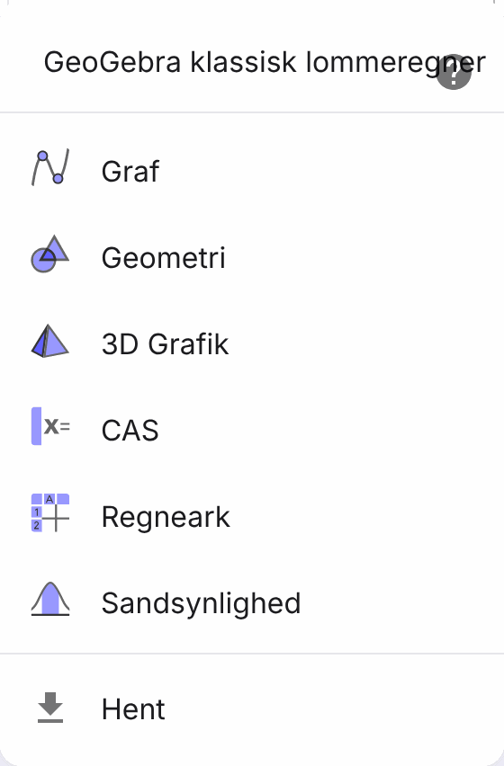
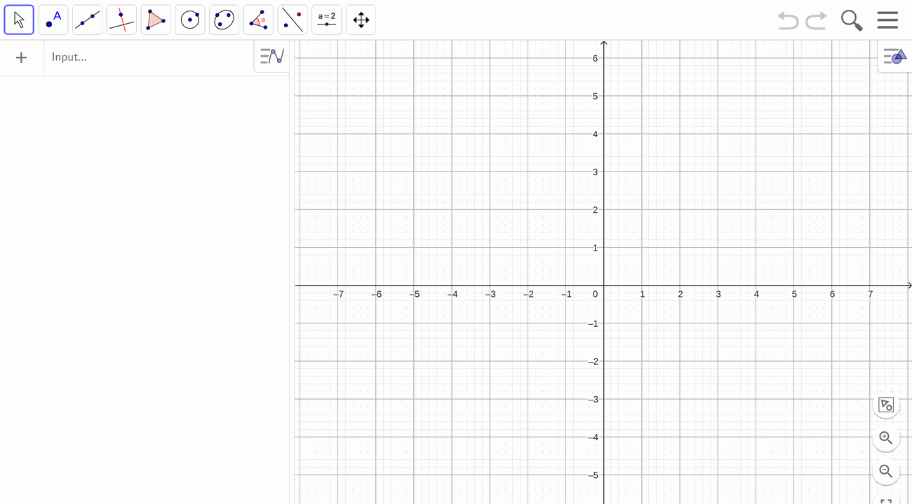
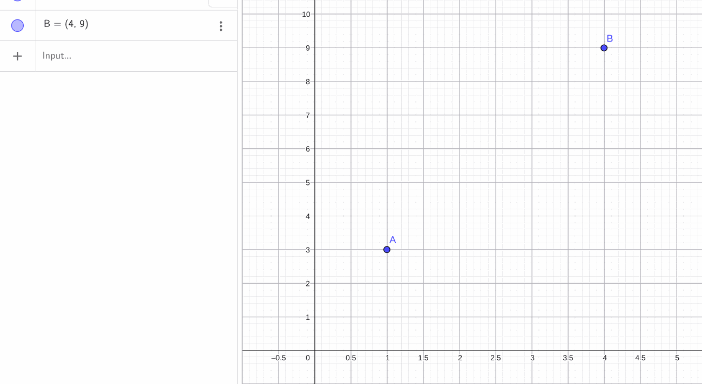
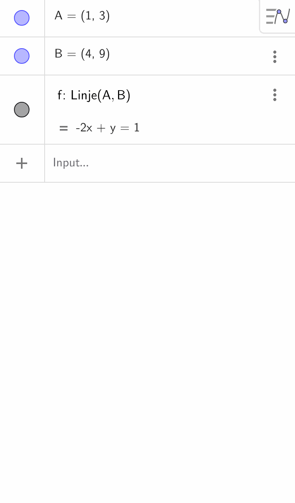
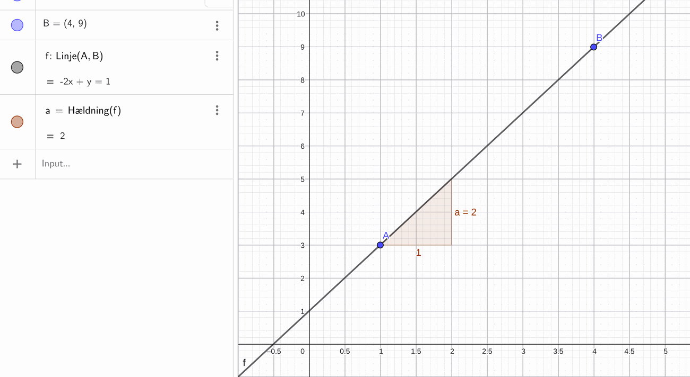
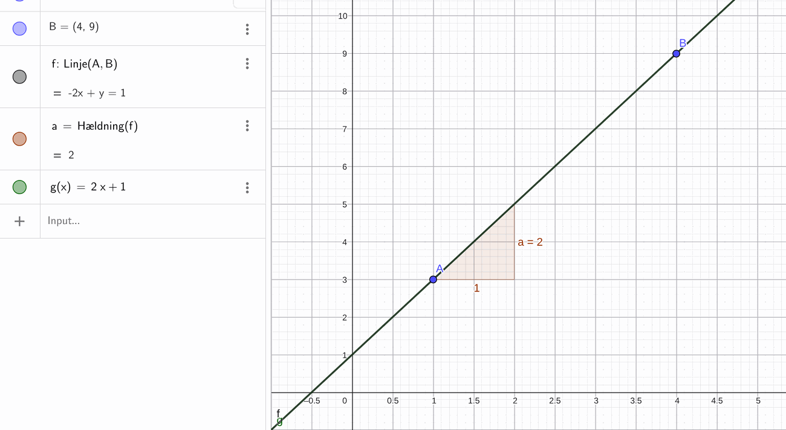
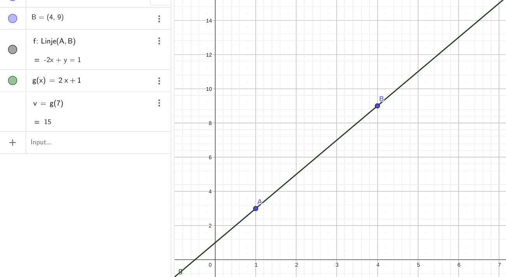
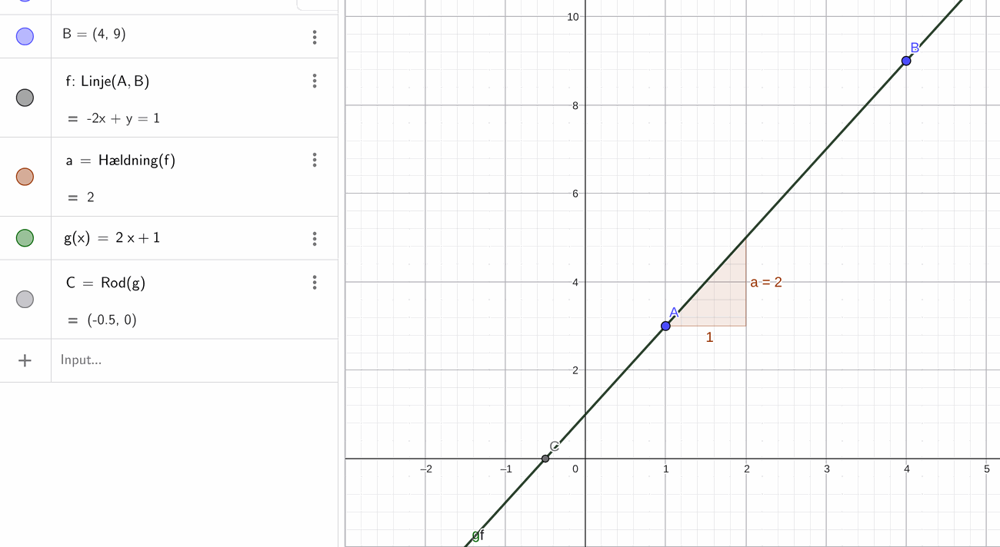
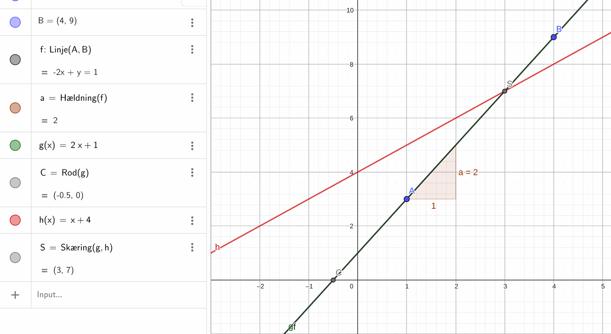
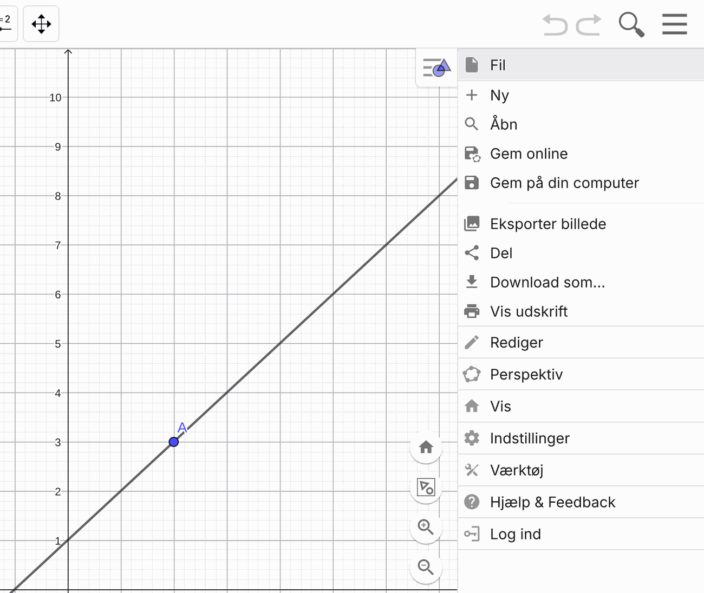

Intro til GeoGebra
Ti trin, der dækker præcis det, du skal bruge i opgave C og D. Alle eksempler bruger andre tal end opgaverne — fremgangsmåden er den samme, men svarene skal du selv finde. Hvert trin har et billede af, hvordan det ser ud på skærmen.
Åbn GeoGebra Tilbage til opgaverne1Åbn GeoGebra, og vælg Graf
Gå ind på geogebra.org/classic. Du skal ikke logge ind, og du skal ikke hente noget.
Første gang siden åbner, kommer der en liste frem i højre side. Vælg den øverste: Graf. Det er det eneste sted, ordet «Graf» står.
Kommer listen ikke frem, er du allerede i Graf — så gå bare videre. Du kan altid finde listen igen: klik på de tre streger øverst til højre, og vælg Perspektiv.
Alt, hvad du skriver i Input-feltet, afsluttes med Enter.


2Sæt de to punkter ind
Har du to målinger — to kvitteringer, to aflæsninger — så er de to punkter. Skriv dem ét ad gangen, og tryk Enter efter hvert.
Pas på kommaet: koordinater skrives (1,3). Decimaltal skrives med punktum i GeoGebra, så 2,5 skrives 2.5.
A=(1,3) | Punktet A dukker op i grafikvinduet |
B=(4,9) | Punktet B kommer også |

3Tegn linjen gennem dem
Nu trækker du linjen gennem de to punkter. Den får automatisk navnet f.
Her kommer en overraskelse. GeoGebra skriver ikke linjen som y = ax + b. Der står -2x + y = 1. Det er den samme linje, bare skrevet på en anden måde — og du skal selv skrive den om.
Linje(A,B) | Linjen tegnes, og dens ligning står i algebravinduet |

4Skriv ligningen om, så den bliver til y = ax + b
Du vil have y til at stå alene på venstre side. Lige nu står der -2x i vejen.
1. Læg 2x til på begge sider af lighedstegnet. Det må man altid, så længe man gør det samme på begge sider.
2. På venstre side går -2x + 2x ud med hinanden. Tilbage står y helt alene.
3. På højre side bliver 1 til 2x + 1.
Altså y = 2x + 1. Huskereglen: flytter du et led over på den anden side af lighedstegnet, skifter det fortegn. Minus bliver til plus, plus bliver til minus. Leddet forsvinder ikke — det flytter.
Tjek til sidst: sæt et af dine punkter ind. Med A = (1, 3): 2 · 1 + 1 = 3. Det passer, så omskrivningen er rigtig.
5Få hældningen a med kommandoen Hældning
Kommandoen hedder Hældning, og den er den vigtigste på hele siden. Du skriver Hældning(f) — altså navnet på den linje, du vil kende hældningen af.
Hvorfor er den vigtigst? Fordi den ikke bare giver dig tallet. Den tegner trappetrinnet ude på linjen, så du kan se, hvor tallet kommer fra: gå 1 til højre, og se hvor meget linjen går op. Det tal er a.
Det er præcis det trappetrin, opgaven beder dig om at aflæse. GeoGebra tegner ét trin til højre; i opgaven går du fem til højre og deler med fem bagefter — det er det samme tal.
Begynd bare at skrive Hæld, så foreslår GeoGebra resten. Husk den danske stavemåde med æ.
Hældning(f) | Tallet a kommer frem, og trappetrinnet tegnes på linjen |

6Aflæs b, og skriv din egen forskrift
b er dér, hvor linjen skærer y-aksen — den lodrette. Kig i grafikvinduet: her krydser linjen i 1, så b = 1.
Nu har du både a og b. Skriv selv forskriften, og giv den et nyt navn, fx g. Skriv g(x)= foran — så bliver det en funktion, og så virker de næste kommandoer.
Sådan tjekker du dig selv: hvis din forskrift er rigtig, lægger g sig præcis oven på f, og du kan ikke se to linjer. Kan du se to, er der en fejl i a eller b.
g(x)=2x+1 | Din egen forskrift tegnes — den skal dække linjen f |

7Regn en værdi ud
Skal du vide, hvad noget koster ved et bestemt x — 7 timer, 12 GB — så skriver du bare tallet i parentesen.
Det svarer til at sætte tallet ind i forskriften i hånden: 2 · 7 + 1 = 15. Gør gerne begge dele; GeoGebra er god til at fange regnefejl.
g(7) | Svaret står med det samme i algebravinduet |

8Find nulpunktet med kommandoen Rod
Nulpunktet er dér, hvor grafen rammer x-aksen — hvor y er nul. Det er fx dér, hvor telefonen er løbet tør for strøm.
Kommandoen hedder Rod. Ikke «Nulpunkt» — det findes ikke i GeoGebra, selv om det er det, vi kalder det i timen.
Den virker kun på en funktion. Har du kun linjen f fra Linje-kommandoen, får du ingenting. Brug din egen g fra trin 6.
Rod(g) | Punktet, hvor grafen krydser x-aksen |

9To linjer og skæringspunktet
I opgave D er der to abonnementer. Skriv begge forskrifter som funktioner, og find så punktet, hvor de krydser hinanden.
Skæringspunktet er det sted, hvor de to koster det samme. Til venstre for punktet er den ene billigst, til højre den anden. Det er hele pointen i opgaven.
g(x)=2x+1 | Den første linje |
h(x)=x+4 | Den anden linje |
Skæring(g,h) | Punktet, hvor de krydser, med begge koordinater |

10Få billedet ind i Word
Opgaven siger, at udregningerne skal laves i Word, og at du skal vise din metode. Billedet fra GeoGebra er en del af metoden.
Klik på de tre streger øverst til højre → Fil → Eksporter billede. Så kan du hente billedet og sætte det ind i Word.
Skriv altid under billedet, hvad x og y står for. Et koordinatsystem uden enheder siger ingenting — er det timer og kroner, eller GB og kroner?

Punkt for punkt — sådan gør du
Ét punkt ad gangen, i den rækkefølge de står. Sæt et kryds, når du er færdig med et punkt.
- Åbn geogebra.org/classic, og vælg Graf i listen.
- Skriv dit første punkt, fx
A=(1,3), og tryk Enter. - Skriv dit andet punkt, fx
B=(4,9), og tryk Enter. - Skriv
Linje(A,B). Nu er linjen tegnet. - Skriv ligningen om, så der står
y = ax + b. Flyt leddet over, og skift fortegn. - Skriv
Hældning(f), og skriv talletaned. - Aflæs
bdér, hvor linjen krydser y-aksen, og skriv tallet ned. - Skriv din egen forskrift:
g(x)=og så dit a og dit b. Tjek, at den lægger sig oven på linjen. - Tag et billede: tre streger → Fil → Eksporter billede. Sæt det ind i Word, og skriv under det, hvad x og y står for.
- Arbejd videre med den funktion, du nu har lavet. Den er ikke et mål i sig selv — den er værktøjet. Brug den til at svare på det, opgaven spørger om: regn en værdi ud med
g(tal), find nulpunktet medRod(g), og læg den anden linje ind, hvis opgaven har to. Skriv hver gang med ord, hvad tallet betyder i virkeligheden.
Sådan bruger du trinnene i opgaverne
Opgave C · kajakudlejningen og batteriet
De to kvitteringer er dine to punkter. Sæt dem ind (trin 2), tegn linjen (trin 3) og skriv ligningen om (trin 4).
Find hældningen (trin 5), aflæs b, og skriv forskriften (trin 6).
Hvad 7 timer koster, finder du med trin 7.
I batteridelen skal du finde nulpunktet — det er trin 8. Læg mærke til, at a bliver negativ her. Trappetrinnet peger nedad.
Opgave D · de to abonnementer
Her er linjerne tegnet i forvejen. Du skal aflæse a og b og vise ved regning, at det passer.
Skriv de to forskrifter, du har aflæst, ind som funktioner (trin 9). Lægger de sig oven i de to tegnede linjer, har du aflæst rigtigt.
Find skæringspunktet med trin 9. Sammenlign med det, du aflæste på figuren — og med det, du får ved at sætte de to forskrifter lig hinanden i hånden.
Prisen ved 12 GB hos hver af dem er to gange trin 7.
Fem ting, der driller
| Komma og punktum | Koordinater skilles med komma: (2,200). Decimaltal skrives med punktum: 2.5. |
|---|---|
| Ligningen ser forkert ud | GeoGebra skriver -2x + y = 1 i stedet for y = 2x + 1. Det er den samme linje — se trin 4. |
| Linjen er ikke en funktion | Linje(A,B) laver en linje, ikke en funktion. Rod og g(7) virker kun på noget, du har skrevet som g(x)=. |
| Du kan ikke se noget | Punkterne i opgaverne har store y-værdier — 200, 350. Rul ud med musehjulet, eller brug forstørrelsesglasset nede til højre, indtil punkterne er inde i billedet. |
| Det hedder Rod | Ikke Nulpunkt. Begynd at skrive Rod, så foreslår GeoGebra resten selv. |
Skærmbillederne er fra GeoGebra Classic, geogebra.org.